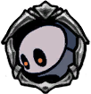

Wandering Husk
 The remains of a bug, animated by a strange force. Wanders the roads where it once lived.These "civilised" bugs of Hallownest were weak in life and now they are equally weak in death. Send them back into the dirt they were born in!
The remains of a bug, animated by a strange force. Wanders the roads where it once lived.These "civilised" bugs of Hallownest were weak in life and now they are equally weak in death. Send them back into the dirt they were born in!

x 3
x 4
 x 35
x 35The Wandering Husk is a ground based enemy found throught many areas of Hallownest, especially the Forgotten Crossroads and the City of Tears. It can often be found with Husk Hornheads and Husk Bullies. Most of the Wandering Husks in the Forgotten Crossroads are replaced by Violent Husks when the Forgotten Crossroads become infected.

 The Wandering Husk will walk slowly from side to side, pausing every now and then, until it sights the player.If the player is in its line of sight, the Wandering Husk will race towards the player, arms flailing for a few seconds before again pausing.The Wandering Husk can lose sight of the player quite easily, in which case it will go back to wandering back and forth. If it can still see the player it will repeat its flailing attack.
The Wandering Husk, even when attacking, moves slowly enough for the player to keep it at bay by batting it away with their nail.As they are stuck on the ground, Wandering Husks can be used for nail pogoing on without much difficulty.Once they begin their attack they are locked into it for a bit, so if the space is large enough, they can be jumped over and attacked freely from behind.
The Wandering Husk will walk slowly from side to side, pausing every now and then, until it sights the player.If the player is in its line of sight, the Wandering Husk will race towards the player, arms flailing for a few seconds before again pausing.The Wandering Husk can lose sight of the player quite easily, in which case it will go back to wandering back and forth. If it can still see the player it will repeat its flailing attack.
The Wandering Husk, even when attacking, moves slowly enough for the player to keep it at bay by batting it away with their nail.As they are stuck on the ground, Wandering Husks can be used for nail pogoing on without much difficulty.Once they begin their attack they are locked into it for a bit, so if the space is large enough, they can be jumped over and attacked freely from behind.
Wandering Husks can be found the following areas: